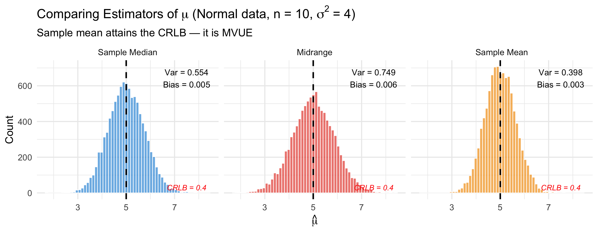
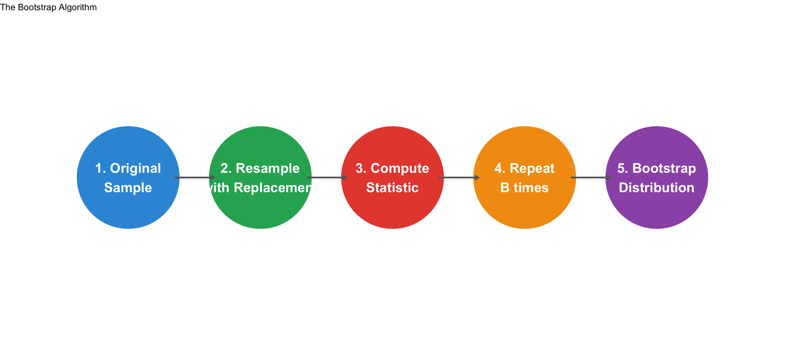
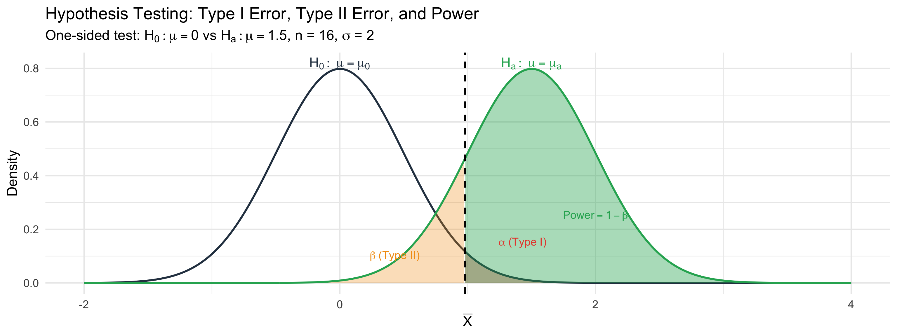
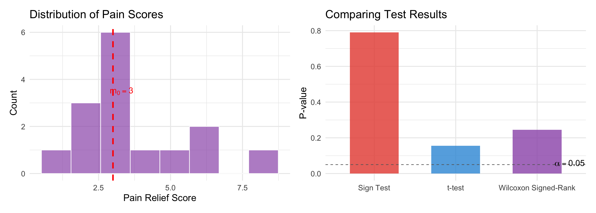
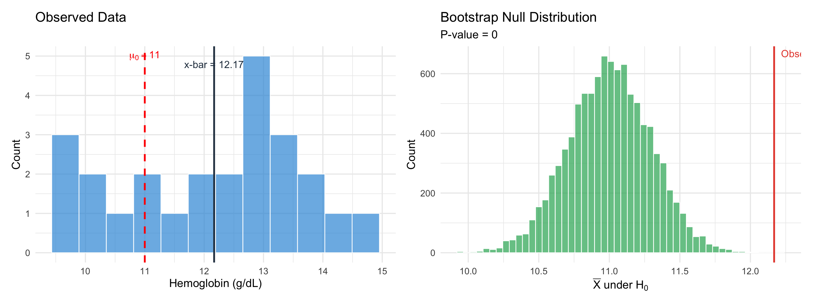

BSTA 551: Statistical Inference
2026-03-11
Central Question of Statistical Inference
Given a random sample \(X_1, X_2, \ldots, X_n\) from a population with unknown parameter \(\theta\), how do we:
The three pillars share a foundation: the sampling distribution of estimators.
Given data \(X_1, \ldots, X_n \stackrel{iid}{\sim} f(x|\theta)\), a statistic \(T = g(X_1, \ldots, X_n)\) is an estimator of \(\theta\).
Criteria for a good estimator:
| Property | Definition | Measures |
|---|---|---|
| Bias | \(\text{Bias}(\hat{\theta}) = E[\hat{\theta}] - \theta\) | Systematic error |
| Variance | \(\text{Var}(\hat{\theta}) = E[(\hat{\theta} - E[\hat{\theta}])^2]\) | Precision / spread |
| MSE | \(\text{MSE}(\hat{\theta}) = \text{Var}(\hat{\theta}) + [\text{Bias}(\hat{\theta})]^2\) | Overall accuracy |
| Consistency | \(\hat{\theta}_n \xrightarrow{P} \theta\) as \(n \to \infty\) | Large-sample reliability |
The Bias-Variance Tradeoff
A biased estimator with small variance (low MSE) can be preferred over an unbiased estimator with large variance. MSE captures this tradeoff.
Method of Moments (MOM)
Set sample moments equal to population moments: \[\frac{1}{n}\sum_{i=1}^n X_i^k = E[X^k] \quad k = 1, 2, \ldots\]
Maximum Likelihood (MLE)
Maximize the likelihood (or log-likelihood): \[\hat{\theta}_{MLE} = \arg\max_\theta L(\theta | \mathbf{x}) = \arg\max_\theta \ell(\theta | \mathbf{x})\]
Goal: Among all unbiased estimators, find the one with minimum variance (MVUE).
Cramér-Rao Lower Bound (CRLB):
For any unbiased estimator \(\hat{\theta}\): \[\text{Var}(\hat{\theta}) \geq \frac{1}{I_n(\theta)} = \frac{1}{nI_1(\theta)}\]
where the Fisher Information for a single observation is: \[I_1(\theta) = E\left[-\frac{\partial^2}{\partial\theta^2}\ln f(X|\theta)\right] = \text{Var}\left(\frac{\partial}{\partial\theta}\ln f(X|\theta)\right)\]
If \(\text{Var}(\hat{\theta}) = \frac{1}{I_n(\theta)}\), then \(\hat{\theta}\) is MVUE (attains the CRLB).
| Method | Approach | When to Use |
|---|---|---|
| CRLB attainment | Show \(\text{Var}(\hat{\theta}) = 1/I_n(\theta)\) | If equality holds |
| Rao-Blackwell | Condition on sufficient statistic: \(E[\hat{\theta}|T]\) | Improve an unbiased estimator |
| Lehmann-Scheffé | Unbiased + function of complete sufficient statistic | Most general approach |
Sufficiency (Fisher-Neyman Factorization): \(T\) is sufficient for \(\theta\) if \[f(\mathbf{x}|\theta) = g(T(\mathbf{x}), \theta) \cdot h(\mathbf{x})\]
The sufficient statistic captures all information about \(\theta\) in the data.
Data: \(X_1, \ldots, X_n \stackrel{iid}{\sim} N(\mu, \sigma^2)\) with \(\sigma^2\) known.
# Demonstrate CRLB: comparing estimators of normal mean
set.seed(551)
n <- 10
n_sim <- 10000
true_mu <- 5
sims <- tibble(sim = 1:n_sim) |>
mutate(
data = map(sim, ~rnorm(n, mean = true_mu, sd = 2)),
xbar = map_dbl(data, mean),
median = map_dbl(data, median),
midrange = map_dbl(data, ~(max(.x) + min(.x)) / 2)
)
sims_long <- sims |>
select(sim, xbar, median, midrange) |>
pivot_longer(-sim, names_to = "Estimator", values_to = "estimate") |>
mutate(Estimator = fct_recode(Estimator,
"Sample Mean" = "xbar",
"Sample Median" = "median",
"Midrange" = "midrange"
))
# CRLB for this problem: sigma^2 / n = 4/10 = 0.4
crlb_var <- 4 / n
var_summary <- sims_long |>
group_by(Estimator) |>
summarise(
variance = var(estimate),
bias = mean(estimate) - true_mu,
.groups = "drop"
)
ggplot(sims_long, aes(x = estimate, fill = Estimator)) +
geom_histogram(bins = 60, alpha = 0.7, color = "white", position = "identity") +
facet_wrap(~Estimator, nrow = 1) +
geom_vline(xintercept = true_mu, linewidth = 1.2, linetype = "dashed") +
geom_text(data = var_summary,
aes(x = 7.5, y = Inf,
label = paste0("Var = ", round(variance, 3), "\nBias = ", round(bias, 3))),
vjust = 1.5, size = 5, inherit.aes = FALSE) +
annotate("text", x = 7.5, y = 0, label = paste0("CRLB = ", crlb_var),
vjust = -0.5, size = 4.5, fontface = "italic", color = "red") +
scale_fill_manual(values = c("#3498db", "#e74c3c", "#f39c12")) +
labs(x = expression(hat(mu)), y = "Count",
title = expression(paste("Comparing Estimators of ", mu, " (Normal data, n = 10, ", sigma^2, " = 4)")),
subtitle = "Sample mean attains the CRLB — it is MVUE") +
theme(legend.position = "none")
Core Idea
A \(100(1-\alpha)\%\) confidence interval provides a range of plausible values for \(\theta\) based on the observed data. In repeated sampling, \(100(1-\alpha)\%\) of such intervals contain the true \(\theta\).
Approach 1: Pivotal Quantities — Find \(Q(X_1, \ldots, X_n, \theta)\) whose distribution is known and free of \(\theta\), then invert.
Approach 2: Asymptotic (Wald / Score) — Use the asymptotic normality of the MLE.
Approach 3: Bootstrap — Resample from the data to approximate the sampling distribution.
| Setting | Method | Formula |
|---|---|---|
| \(\mu\), \(\sigma\) known | z-interval | \(\bar{x} \pm z_{\alpha/2}\frac{\sigma}{\sqrt{n}}\) |
| \(\mu\), \(\sigma\) unknown | t-interval | \(\bar{x} \pm t_{\alpha/2, n-1}\frac{s}{\sqrt{n}}\) |
| Proportion \(p\) | Wald | \(\hat{p} \pm z_{\alpha/2}\sqrt{\frac{\hat{p}(1-\hat{p})}{n}}\) |
| Proportion \(p\) | Score (Wilson) | \(\tilde{p} \pm z_{\alpha/2}\frac{\sqrt{\hat{p}(1-\hat{p})/n + z^2/(4n^2)}}{1 + z^2/n}\) |
| Proportion \(p\) | Agresti-Coull | Wald with \(\tilde{p} = \frac{X + 2}{n + 4}\) |
| General \(\theta\) | Wald | \(\hat{\theta}_{MLE} \pm z_{\alpha/2}\sqrt{1/I_n(\hat{\theta})}\) |
| General \(\theta\) | Bootstrap percentile | \((\hat{\theta}^*_{\alpha/2}, \; \hat{\theta}^*_{1-\alpha/2})\) |
| General \(\theta\) | Bootstrap t | \(\hat{\theta} \pm t_{\alpha/2, n-1} \cdot SE_{boot}\) |
| General \(\theta\) | Studentized bootstrap | \(\hat{\theta} - t^*_{1-\alpha/2} \cdot SE_{\hat{\theta}}, \;\; \hat{\theta} - t^*_{\alpha/2} \cdot SE_{\hat{\theta}}\) |
When we want a CI for \(g(\theta)\) but have an estimator of \(\theta\):
Delta Method
If \(\hat{\theta} \stackrel{approx}{\sim} N(\theta, \sigma^2_{\hat{\theta}})\), then for differentiable \(g\): \[g(\hat{\theta}) \stackrel{approx}{\sim} N\left(g(\theta), \; [g'(\theta)]^2 \cdot \sigma^2_{\hat{\theta}}\right)\]
Equivalently: \(SE[g(\hat{\theta})] \approx |g'(\hat{\theta})| \cdot SE(\hat{\theta})\)
Example: If \(\hat{\lambda}_{MLE} = 1/\bar{X}\) for Exponential data and we want a CI for the mean \(\mu = 1/\lambda\):

Use bootstrap when: no analytical formula for SE, complex statistics (medians, ratios, correlations), or data are skewed.
Bootstrap t intervals have better coverage for skewed data than percentile intervals (second-order accuracy). Percentile intervals are preferred when the bootstrap distribution is discrete or violates normality assumptions.
Setup:
Two types of error:
| \(H_0\) True | \(H_0\) False | |
|---|---|---|
| Reject \(H_0\) | Type I Error (\(\alpha\)) | Correct (Power = \(1-\beta\)) |
| Fail to reject \(H_0\) | Correct | Type II Error (\(\beta\)) |
Key Distinction
| Parameter | Hypotheses | Test Statistic | Distribution under \(H_0\) |
|---|---|---|---|
| \(\mu\) (\(\sigma\) known) | \(H_0: \mu = \mu_0\) | \(Z = \frac{\bar{X} - \mu_0}{\sigma/\sqrt{n}}\) | \(N(0,1)\) |
| \(\mu\) (\(\sigma\) unknown) | \(H_0: \mu = \mu_0\) | \(T = \frac{\bar{X} - \mu_0}{S/\sqrt{n}}\) | \(t_{n-1}\) |
| \(p\) (proportion) | \(H_0: p = p_0\) | \(Z = \frac{\hat{p} - p_0}{\sqrt{p_0(1-p_0)/n}}\) | \(N(0,1)\) |
P-value: The probability, under \(H_0\), of observing a test statistic as extreme or more extreme than the observed value.
# Visualize the relationship between alpha, beta, and power
mu_0 <- 0
mu_a <- 1.5
sigma <- 2
n <- 16
se <- sigma / sqrt(n)
alpha <- 0.05
z_crit <- qnorm(1 - alpha/2)
crit_val <- mu_0 + z_crit * se
x_seq <- seq(-2, 4, length.out = 500)
df_null <- tibble(x = x_seq, density = dnorm(x_seq, mu_0, se), dist = "Null")
df_alt <- tibble(x = x_seq, density = dnorm(x_seq, mu_a, se), dist = "Alternative")
ggplot() +
# Null distribution
geom_area(data = df_null |> filter(x >= crit_val),
aes(x = x, y = density), fill = "#e74c3c", alpha = 0.4) +
geom_line(data = df_null, aes(x = x, y = density),
color = "#2c3e50", linewidth = 1.2) +
# Alternative distribution
geom_area(data = df_alt |> filter(x >= crit_val),
aes(x = x, y = density), fill = "#27ae60", alpha = 0.4) +
geom_area(data = df_alt |> filter(x < crit_val),
aes(x = x, y = density), fill = "#f39c12", alpha = 0.3) +
geom_line(data = df_alt, aes(x = x, y = density),
color = "#27ae60", linewidth = 1.2) +
# Critical value
geom_vline(xintercept = crit_val, linetype = "dashed", linewidth = 1) +
# Labels
annotate("text", x = mu_0, y = max(df_null$density) + 0.02,
label = expression(H[0]: ~ mu == mu[0]), size = 6, color = "#2c3e50") +
annotate("text", x = mu_a, y = max(df_alt$density) + 0.02,
label = expression(H[a]: ~ mu == mu[a]), size = 6, color = "#27ae60") +
annotate("text", x = crit_val + 0.45, y = 0.15,
label = expression(alpha ~ "(Type I)"), size = 5, color = "#e74c3c") +
annotate("text", x = crit_val - 0.55, y = 0.1,
label = expression(beta ~ "(Type II)"), size = 5, color = "#f39c12") +
annotate("text", x = mu_a + 0.5, y = 0.25,
label = expression("Power" == 1 - beta), size = 5, color = "#27ae60") +
labs(x = expression(bar(X)), y = "Density",
title = "Hypothesis Testing: Type I Error, Type II Error, and Power",
subtitle = expression(paste("One-sided test: ", H[0]: mu == 0, " vs ", H[a]: mu == 1.5,
", n = 16, ", sigma, " = 2"))) +
theme(legend.position = "none")
To achieve power \(1 - \beta\) at significance level \(\alpha\) for detecting a difference \(\delta = \mu_a - \mu_0\):
\[n = \left(\frac{(z_{\alpha/2} + z_\beta) \cdot \sigma}{\delta}\right)^2 \quad \text{(two-sided z-test)}\]
Medical Example: A trial needs 80% power (\(\beta = 0.20\)) to detect a 3 mmHg reduction in systolic blood pressure (\(\sigma = 12\) mmHg) at \(\alpha = 0.05\):
Neyman-Pearson Lemma (Most Powerful Tests)
For testing \(H_0: \theta = \theta_0\) vs \(H_a: \theta = \theta_1\) (simple vs. simple), the most powerful \(\alpha\)-level test rejects \(H_0\) when:
\[\Lambda = \frac{L(\theta_1 | \mathbf{x})}{L(\theta_0 | \mathbf{x})} > k\]
where \(k\) is chosen so that \(P(\text{reject} | H_0) = \alpha\).
Uniformly Most Powerful (UMP) tests exist for one-sided alternatives in monotone likelihood ratio families (e.g., exponential family with one parameter).
For composite hypotheses, we use the Likelihood Ratio Test (LRT):
\[\Lambda = \frac{\sup_{\theta \in \Theta_0} L(\theta|\mathbf{x})}{\sup_{\theta \in \Theta} L(\theta|\mathbf{x})} \quad \text{Reject } H_0 \text{ when } -2\ln\Lambda > \chi^2_{\alpha, r}\]
where \(r\) = number of restrictions imposed by \(H_0\).
The Duality Principle
A \(100(1-\alpha)\%\) confidence interval for \(\theta\) contains exactly those values \(\theta_0\) for which a two-sided \(\alpha\)-level test would fail to reject \(H_0: \theta = \theta_0\).
\[\theta_0 \in \text{CI} \iff \text{fail to reject } H_0: \theta = \theta_0\]
This means:
The CI tells you the same thing as the test — and gives you more information (the range of plausible values, not just reject/fail to reject).
Goal: Compare parameters from two independent populations.
| Setting | Test Statistic | CI Formula |
|---|---|---|
| Means, \(\sigma_1, \sigma_2\) known | \(Z = \frac{\bar{X}_1 - \bar{X}_2 - \delta_0}{\sqrt{\sigma_1^2/n_1 + \sigma_2^2/n_2}}\) | \((\bar{X}_1 - \bar{X}_2) \pm z_{\alpha/2}\sqrt{\frac{\sigma_1^2}{n_1} + \frac{\sigma_2^2}{n_2}}\) |
| Means, \(\sigma\) unknown | Welch t-test with \(\hat{\nu}\) df | \((\bar{X}_1 - \bar{X}_2) \pm t_{\alpha/2, \hat{\nu}} \sqrt{\frac{s_1^2}{n_1} + \frac{s_2^2}{n_2}}\) |
| Proportions | \(Z = \frac{\hat{p}_1 - \hat{p}_2}{\sqrt{\hat{p}(1-\hat{p})(1/n_1 + 1/n_2)}}\) | \((\hat{p}_1 - \hat{p}_2) \pm z_{\alpha/2}\sqrt{\frac{\hat{p}_1(1-\hat{p}_1)}{n_1} + \frac{\hat{p}_2(1-\hat{p}_2)}{n_2}}\) |
Welch Degrees of Freedom
\[\hat{\nu} = \frac{\left(\frac{s_1^2}{n_1} + \frac{s_2^2}{n_2}\right)^2}{\frac{(s_1^2/n_1)^2}{n_1 - 1} + \frac{(s_2^2/n_2)^2}{n_2 - 1}}\] Use t.test() in R — it uses Welch by default (no equal-variance assumption needed).
When observations are naturally paired (before/after, matched subjects, same patient):
\[D_i = X_{1i} - X_{2i}, \quad i = 1, \ldots, n\]
Reduces to a one-sample problem on the differences \(D_1, \ldots, D_n\).
Paired t-test: \[T = \frac{\bar{D} - \delta_0}{S_D / \sqrt{n}} \sim t_{n-1} \quad \text{under } H_0\]
Medical Example: Blood pressure measured before and after treatment in 20 patients — pairing controls for patient-level variation (baseline health, age, genetics) that would add noise in an independent two-sample design.
# Simulated paired blood pressure data
set.seed(551)
n <- 20
bp_before <- rnorm(n, mean = 145, sd = 12)
bp_after <- bp_before + rnorm(n, mean = -5, sd = 6) # treatment effect ~ -5 mmHg
t.test(bp_before, bp_after, paired = TRUE) |> tidy() |>
select(estimate, statistic, p.value, conf.low, conf.high) |>
mutate(across(everything(), ~round(.x, 3))) |>
knitr::kable()| estimate | statistic | p.value | conf.low | conf.high |
|---|---|---|---|---|
| 5.52 | 3.629 | 0.002 | 2.337 | 8.704 |
Idea: Under \(H_0\), the null is true — create a bootstrap world that reflects this.
One-sample bootstrap test for \(H_0: \mu = \mu_0\):
Two-sample permutation test for \(H_0: F_1 = F_2\) (same distribution):
Important infer Package Note
generate(type = "bootstrap") with hypothesize(null = "independence") does not implement the shift method for two-sample tests. Use type = "permute" for two-sample null hypothesis testing. The shift-bootstrap must be coded manually.
| Bootstrap | Permutation | |
|---|---|---|
| Tests | One-sample (via shift), CIs | Two-sample equality |
| \(H_0\) | Specific parameter value | \(F_1 = F_2\) (exchangeability) |
| Resampling | With replacement from (shifted) sample | Without replacement across pooled sample |
| CIs | Yes (percentile, t, studentized) | Not directly (test only) |
| Assumption | Data representative of population | Exchangeability under \(H_0\) |
Nonparametric tests do not require a specific distributional form (e.g., normality).
| Test | Setting | \(H_0\) | Based On |
|---|---|---|---|
| Sign test | One-sample | \(\text{median} = m_0\) | Count of \(X_i > m_0\) |
| Wilcoxon signed-rank | One-sample / paired | Symmetric about \(m_0\) | Signed ranks of \(|X_i - m_0|\) |
| Wilcoxon rank-sum | Two independent samples | \(F_1 = F_2\) | Ranks of combined sample |
Asymptotic relative efficiency (ARE):
# Skewed pain relief data — nonparametric appropriate
set.seed(551)
pain_scores <- c(2.1, 3.5, 1.8, 4.2, 2.9, 6.1, 3.3, 2.5, 8.4, 3.0,
1.2, 5.7, 2.8, 3.6, 4.8)
# Null: median pain relief = 3.0 (clinically meaningful threshold)
m0 <- 3.0
# Sign test
n_above <- sum(pain_scores > m0)
n_below <- sum(pain_scores < m0)
n_nonzero <- n_above + n_below
sign_p <- 2 * pbinom(min(n_above, n_below), n_nonzero, 0.5)
# Wilcoxon signed-rank test
wsr <- wilcox.test(pain_scores, mu = m0, conf.int = TRUE)
# Visualization
p1 <- tibble(score = pain_scores) |>
ggplot(aes(x = score)) +
geom_histogram(bins = 8, fill = "#9b59b6", alpha = 0.7, color = "white") +
geom_vline(xintercept = m0, linetype = "dashed", linewidth = 1.2, color = "red") +
annotate("text", x = m0 + 0.3, y = 3.5, label = expression(m[0] == 3.0),
size = 5, color = "red") +
labs(x = "Pain Relief Score", y = "Count", title = "Distribution of Pain Scores") +
theme_minimal(base_size = 16)
p2 <- tibble(
Test = c("Sign Test", "Wilcoxon Signed-Rank", "t-test"),
`P-value` = c(sign_p, wsr$p.value, t.test(pain_scores, mu = m0)$p.value)
) |>
ggplot(aes(x = Test, y = `P-value`)) +
geom_col(fill = c("#e74c3c", "#9b59b6", "#3498db"), alpha = 0.8, width = 0.6) +
geom_hline(yintercept = 0.05, linetype = "dashed", color = "gray40") +
annotate("text", x = 3.4, y = 0.06, label = expression(alpha == 0.05), size = 5) +
labs(y = "P-value", x = "", title = "Comparing Test Results") +
theme_minimal(base_size = 16)
p1 + p2
Gauss-Markov Theorem
Under the linear model \(\mathbf{Y} = \mathbf{X}\boldsymbol{\beta} + \boldsymbol{\varepsilon}\) with:
The OLS estimator \(\hat{\boldsymbol{\beta}} = (\mathbf{X}^T\mathbf{X})^{-1}\mathbf{X}^T\mathbf{Y}\) is BLUE: Best (minimum variance) Linear Unbiased Estimator.
Connection to MVUE theory:
The Bayesian approach treats \(\theta\) as a random variable:
\[\underbrace{\pi(\theta | \mathbf{x})}_{\text{Posterior}} \propto \underbrace{L(\theta | \mathbf{x})}_{\text{Likelihood}} \times \underbrace{\pi(\theta)}_{\text{Prior}}\]
Key conjugate families:
| Likelihood | Prior | Posterior |
|---|---|---|
| Binomial\((n, p)\) | Beta\((\alpha, \beta)\) | Beta\((\alpha + x, \; \beta + n - x)\) |
| Poisson\((\lambda)\) | Gamma\((\alpha, \beta)\) | Gamma\((\alpha + \sum x_i, \; \beta + n)\) |
| Normal\((\mu, \sigma^2)\) | Normal\((\mu_0, \tau^2)\) | Normal\(\left(\frac{\mu_0/\tau^2 + n\bar{x}/\sigma^2}{1/\tau^2 + n/\sigma^2}, \; \frac{1}{1/\tau^2 + n/\sigma^2}\right)\) |
Bayesian vs. Frequentist:
A clinical trial measures hemoglobin (g/dL) in \(n = 25\) patients with chronic anemia after 12 weeks of a new erythropoiesis-stimulating agent. The clinically important threshold is \(\mu_0 = 11\) g/dL.
n = 25 Mean: 12.168 SD: 1.496 Median: 12.42 Point estimate (MLE): 12.168 g/dLStandard error: 0.299 g/dLFisher Information (estimated): I_n = 11.178 CRLB-based SE: sqrt(1/I_n) = 0.299 g/dL# 1. t-interval (pivotal)
t_ci <- t.test(hgb)$conf.int
# 2. Bootstrap percentile CI
B <- 10000
boot_means <- replicate(B, mean(sample(hgb, replace = TRUE)))
pct_ci <- quantile(boot_means, c(0.025, 0.975))
# 3. Bootstrap t CI
boot_t_ci <- theta_hat + c(-1, 1) * qt(0.975, n - 1) * sd(boot_means)
tibble(
Method = c("t-interval", "Bootstrap percentile", "Bootstrap t"),
Lower = round(c(t_ci[1], pct_ci[1], boot_t_ci[1]), 3),
Upper = round(c(t_ci[2], pct_ci[2], boot_t_ci[2]), 3),
Width = round(c(diff(t_ci), diff(pct_ci), diff(boot_t_ci)), 3)
) |>
knitr::kable()| Method | Lower | Upper | Width |
|---|---|---|---|
| t-interval | 11.551 | 12.785 | 1.235 |
| Bootstrap percentile | 11.578 | 12.717 | 1.139 |
| Bootstrap t | 11.562 | 12.774 | 1.213 |
\(H_0: \mu = 11\) vs. \(H_a: \mu > 11\) (is mean hemoglobin above threshold?)
# Classical t-test
t_result <- t.test(hgb, mu = 11, alternative = "greater")
# Wilcoxon signed-rank test
w_result <- wilcox.test(hgb, mu = 11, alternative = "greater")
# Bootstrap test (shift method)
hgb_shifted <- hgb - mean(hgb) + 11 # center at null
boot_null <- replicate(B, mean(sample(hgb_shifted, replace = TRUE)))
boot_pval <- mean(boot_null >= theta_hat)
tibble(
Test = c("One-sample t-test", "Wilcoxon signed-rank", "Bootstrap (shift)"),
Statistic = round(c(t_result$statistic, w_result$statistic, NA), 3),
`P-value` = round(c(t_result$p.value, w_result$p.value, boot_pval), 4)
) |>
knitr::kable()| Test | Statistic | P-value |
|---|---|---|
| One-sample t-test | 3.905 | 3e-04 |
| Wilcoxon signed-rank | 280.000 | 5e-04 |
| Bootstrap (shift) | NA | 0e+00 |
p_data <- tibble(hgb = hgb) |>
ggplot(aes(x = hgb)) +
geom_histogram(bins = 12, fill = "#3498db", alpha = 0.7, color = "white") +
geom_vline(xintercept = 11, color = "red", linewidth = 1.2, linetype = "dashed") +
geom_vline(xintercept = mean(hgb), color = "#2c3e50", linewidth = 1.2) +
annotate("text", x = 11, y = Inf, label = expression(mu[0] == 11),
vjust = 1.5, color = "red", size = 5) +
annotate("text", x = mean(hgb), y = Inf, label = paste0("x-bar = ", round(mean(hgb), 2)),
vjust = 3, color = "#2c3e50", size = 5) +
labs(x = "Hemoglobin (g/dL)", y = "Count", title = "Observed Data") +
theme_minimal(base_size = 16)
p_boot <- tibble(stat = boot_null) |>
ggplot(aes(x = stat)) +
geom_histogram(bins = 50, fill = "#27ae60", alpha = 0.7, color = "white") +
geom_vline(xintercept = theta_hat, color = "#e74c3c", linewidth = 1.2) +
annotate("text", x = theta_hat + 0.05, y = Inf,
label = paste0("Observed = ", round(theta_hat, 2)),
vjust = 1.5, hjust = 0, color = "#e74c3c", size = 5) +
labs(x = expression(bar(X) * " under " * H[0]), y = "Count",
title = "Bootstrap Null Distribution",
subtitle = paste0("P-value = ", round(boot_pval, 4))) +
theme_minimal(base_size = 16)
p_data + p_boot
| Situation | Best Method | Why |
|---|---|---|
| Normal data, \(\sigma\) known | z-interval | Exact pivotal quantity |
| Normal data, \(\sigma\) unknown | t-interval | Exact pivotal quantity |
| Proportion, large n | Wald or Score | Wald is simpler; Score better near boundaries |
| Proportion, small n or \(p\) near 0/1 | Score (Wilson) or Agresti-Coull | Avoids undercoverage |
| General parameter, large n | Wald (MLE-based) | Asymptotic normality of MLE |
| Complex statistic (median, ratio) | Bootstrap | No analytical SE formula |
| Skewed data, \(n \geq 15\) | Studentized bootstrap t | Second-order accuracy |
| Very small n (< 10) | Classical t (if normal) | Bootstrap unreliable |
| Situation | Test | Assumption |
|---|---|---|
| One mean, normal/large n | One-sample t | Normality or CLT |
| One mean, non-normal, small n | Wilcoxon signed-rank or bootstrap | Symmetry (Wilcoxon) |
| One median | Sign test | Minimal (none beyond iid) |
| Two means, independent | Welch t | Normality or CLT |
| Two means, paired | Paired t | Differences ~ normal |
| Two distributions equal | Permutation test | Exchangeability under \(H_0\) |
| Two independent, non-normal | Wilcoxon rank-sum | Continuous distributions |
| Optimal test (simple \(H_0\) vs \(H_1\)) | Neyman-Pearson (LR) | Parametric model specified |
| Composite \(H_0\) | Likelihood ratio test | \(-2\ln\Lambda \sim \chi^2\) (large n) |
The likelihood function \(L(\theta|\mathbf{x})\) connects nearly every topic in this course:
Point Estimation:
Confidence Intervals:
Hypothesis Testing:
Bayesian:
Interpretation Errors
Technical Errors
Final Exam Coverage
The final exam is comprehensive, covering Lessons 1–23. Emphasis is on:
t.test(), wilcox.test(), bootstrap codeStudy strategy:
Problem 1 (Point Estimation): Let \(X_1, \ldots, X_n \stackrel{iid}{\sim} \text{Gamma}(\alpha, \beta)\) with \(\alpha\) known.
Find the MLE of \(\beta\).
Find \(I_1(\beta)\) and determine whether the MLE attains the CRLB.
Is \(T = \sum X_i\) sufficient for \(\beta\)? Prove using the factorization theorem.
Problem 2 (CI and Testing): In a clinical trial, 45 out of 200 patients experience symptom relief (vs. historical rate of 30%).
Construct a 95% Wald CI and a 95% Score (Wilson) CI for the true relief rate.
Test \(H_0: p = 0.30\) vs \(H_a: p \neq 0.30\). State conclusions at \(\alpha = 0.05\).
Explain why the Score CI is preferred here.
Problem 3 (Two-sample and Nonparametric): Researchers compare recovery times (days) for two surgical techniques. Group A (\(n_1 = 15\)): \(\bar{x}_1 = 8.2\), \(s_1 = 3.1\). Group B (\(n_2 = 12\)): \(\bar{x}_2 = 6.5\), \(s_2 = 2.4\).
Perform a Welch t-test for \(H_0: \mu_1 - \mu_2 = 0\) vs \(H_a: \mu_1 - \mu_2 \neq 0\).
If data were highly skewed, which nonparametric test would you use instead and why?
Describe how you would perform a permutation test for this comparison.
Problem 4 (Connections):
Explain the duality between a 95% CI for \(\mu\) and a two-sided \(\alpha = 0.05\) t-test.
For testing \(H_0: \lambda = \lambda_0\) vs \(H_a: \lambda = \lambda_1\) (where \(\lambda_1 > \lambda_0\)) in a Poisson model, use the Neyman-Pearson lemma to derive the most powerful test.
Describe how the posterior distribution in Bayesian inference relates to the MLE as \(n \to \infty\).
Good luck on the final exam!
The exam is due March 19 at 11pm.
Office hours and review sessions will be available — check the course website for times.
Lesson 24 - Course Review